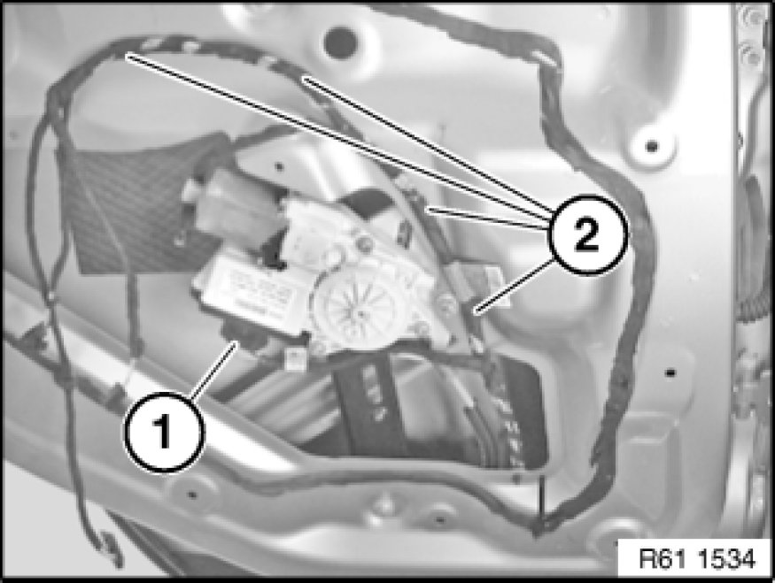
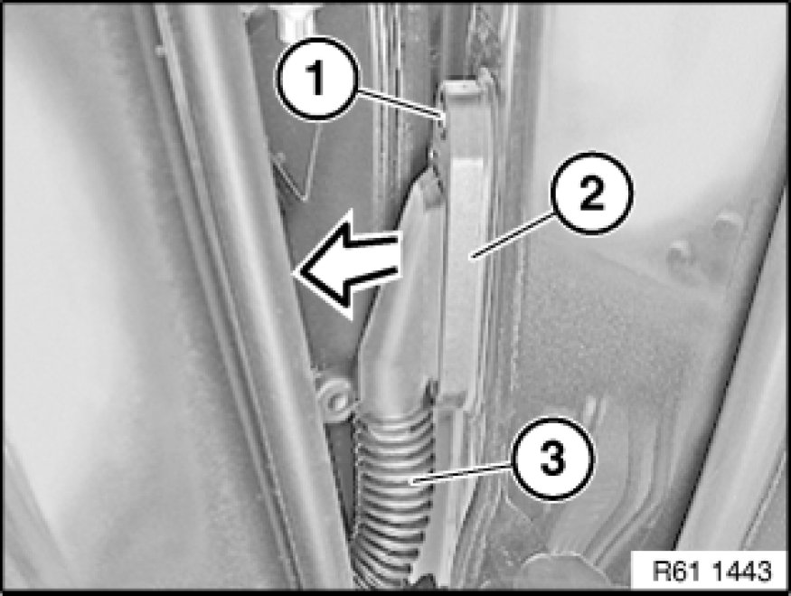

Replacing Wiring Harness in Left or Right Rear Door
61 12 210 - Replacing wiring harness in left or right rear door

Necessary preliminary tasks:
- Close rear side window completely
- Remove cover on door handle Removing and Installing/Replacing Cover on Door Handle, Front Left or Right
- Remove rear door trim panel Removing and Installing Left or Right Rear Door Trim Panel
- Remove rear acoustic insulation Removing and Installing/Replacing Sound Insulation on Left or Right Rear Door

Disconnect plug connection (1) on power window unit.
Unclip door wiring harness at points (2).
Installation:
Make sure door wiring harness is correctly laid.

Release screw (1), fold door wiring harness plug on B-pillar (2) downwards slightly and remove.
Unlock plug connection behind and disconnect.
Pull rubber grommet (3) out of rear door.
Feed out door wiring harness towards front to B-pillar and remove.